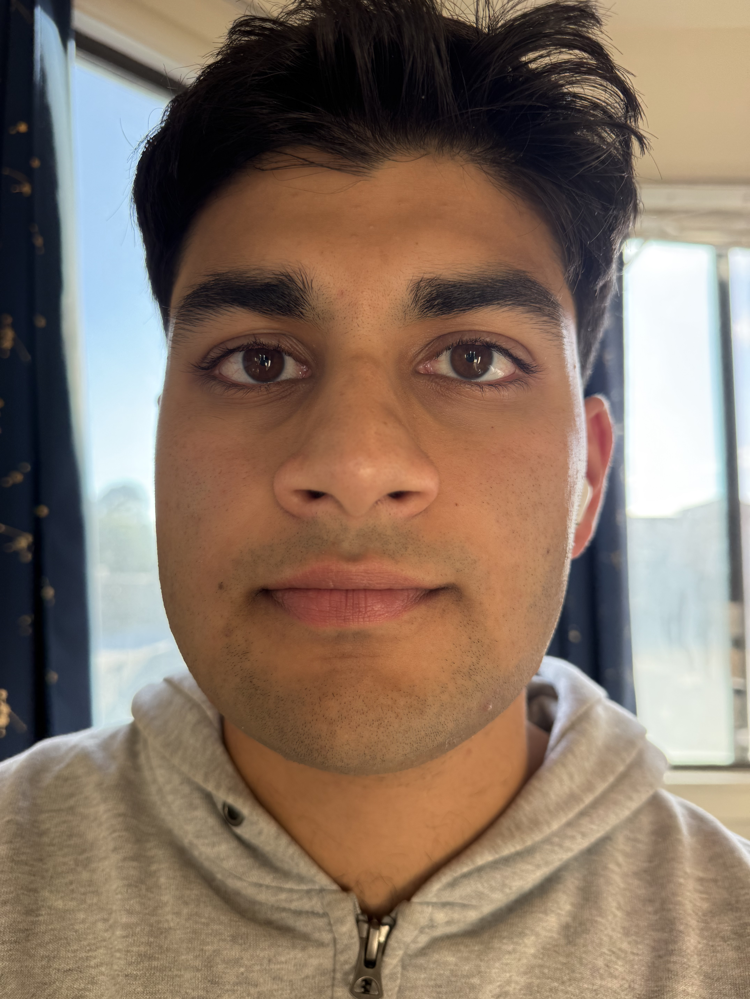
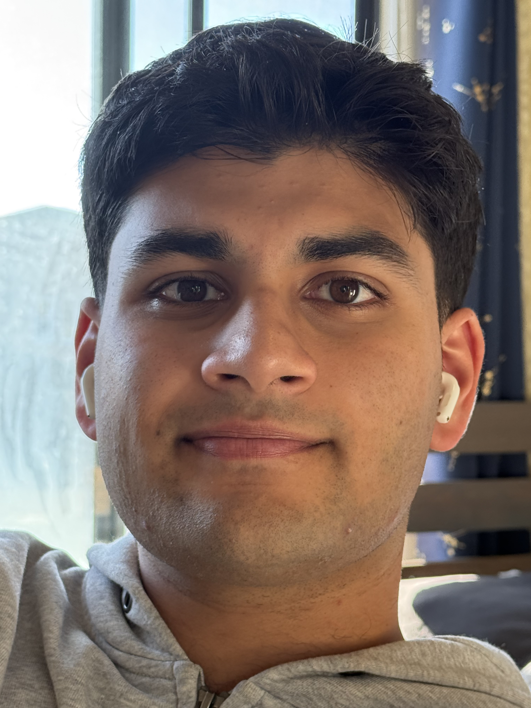
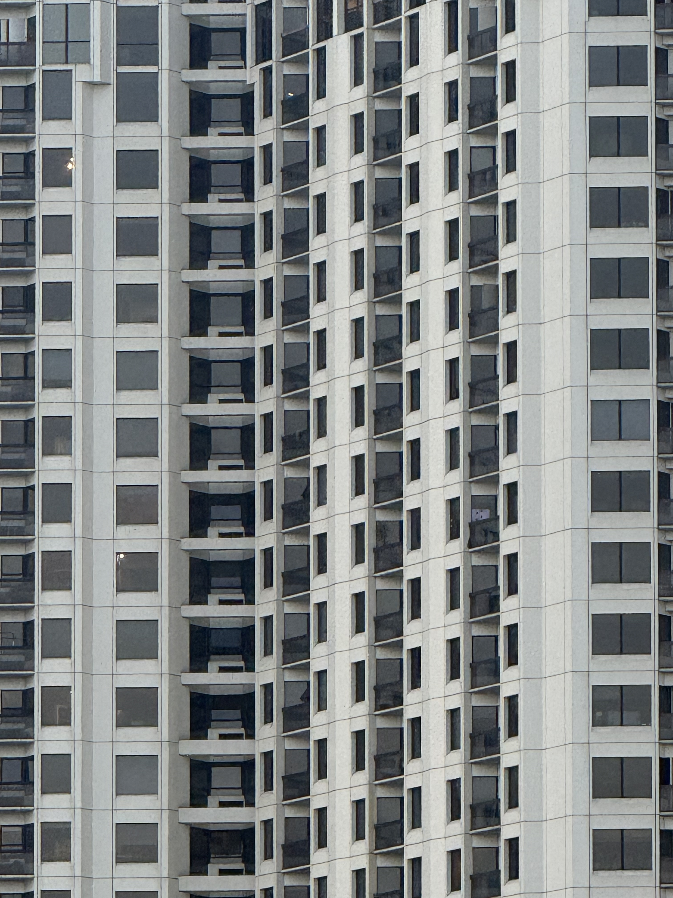
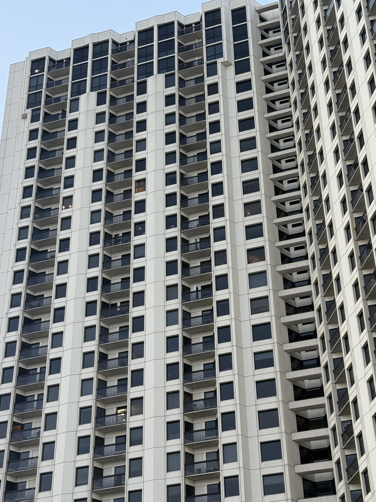
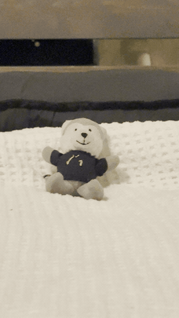

CS 180 · Project 0
Becoming Friends with Your Camera
In this project, I explored the relationship between perspective, focal length/zoom, and the center of projection. Every camera makes two decisions at once: how far it stands from the world, and how much it magnifies what it sees. Change them together and a photo can stay the same size but tell a completely different story about depth. The three experiments below isolate that relationship — first on a face, then on a building, then in one continuous move known as the dolly zoom.
close-up.jpg vs. stepped-back-zoomed.jpg

drop part1-closeup.jpg in this folder
drop part1-farzoom.jpg in this folderMoving the camera back a few feet and zooming in, while keeping my face the same size in frame, noticeably changed my proportions. Up close, my nose is much closer to the lens than my ears, so that small depth difference gets exaggerated: my nose looks bigger, my ears shrink and nearly vanish from frame, and my whole face looks rounder. Stepping back evens out the nose-to-lens and ear-to-lens distances, so everything looks more proportional, closer to how I actually look in person. It's the same reason portrait photographers shoot from farther away with a longer lens instead of getting close with a wide one.
far-zoomed-in.jpg vs. close-no-zoom.jpg

drop part2-farzoom.jpg in this folder
drop part2-closeup.jpg in this folderZoomed in from far away, the building looks flattened, almost like a 2D grid, with the window lines staying close to parallel. Up close without zoom, the perspective converges hard: lines pull toward a vanishing point and the facade looks like it's dramatically receding. That's because the near and far parts of the building sit at very different distances from me up close (a large proportional difference), but from far away that same depth range becomes a tiny fraction of the total distance, so everything ends up looking roughly the same distance away and the facade compresses flat.
dolly-zoom.gif

drop dolly-zoom.gif in this folder[Describe your setup here: what the subject was, roughly how many stills you took, and what stayed fixed vs. what changed. Then say what makes the effect work — the subject stays the same size in frame while the field of view and background compression change underneath it.]